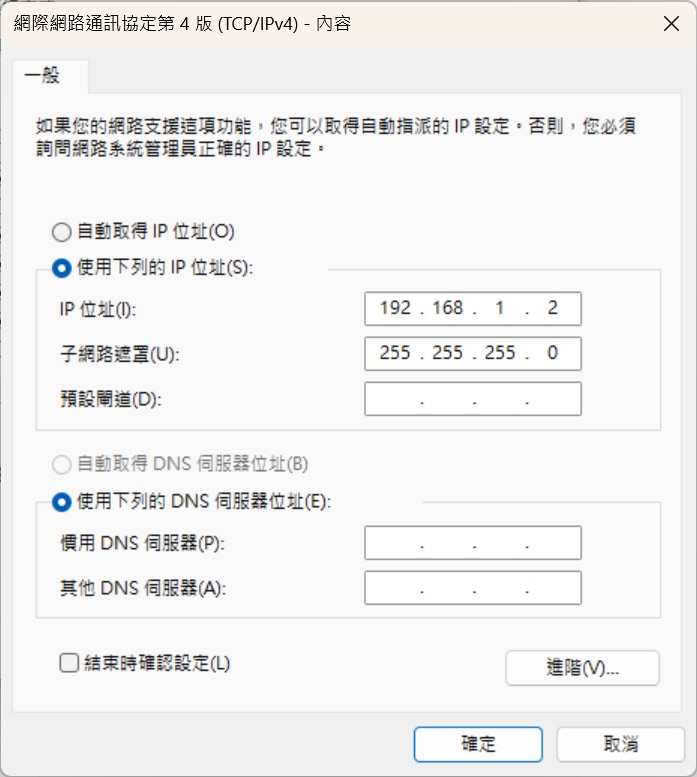
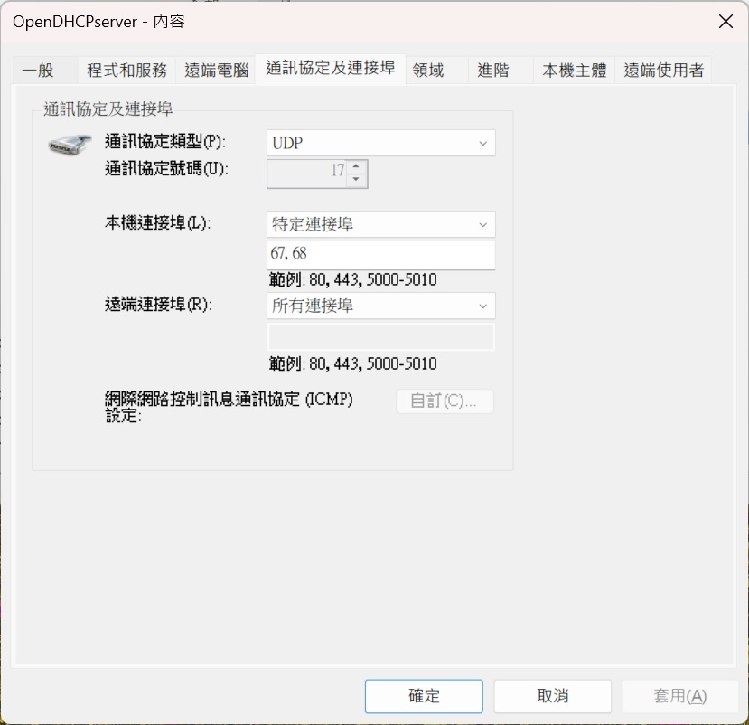

基本設置與 IP 分配配置
- 安裝：從 SourceForge 下載 Open DHCP Server（例如
OpenDHCPServerInstaller64bitV1.84.exe），安裝至預設路徑（C:\OpenDHCPServer）。 - 服務啟動：執行
InstallService.exe註冊服務，在services.msc中啟動「Open DHCP Server」。 - 配置文件（
OpenDHCPServer.ini）：[LISTEN_ON]：指定網卡 IP，例如192.168.1.2。[RANGE_SET]：設置 IP 分配範圍，例如DHCPRange=192.168.1.100-192.168.1.150。- 重啟服務以生效。
- 測試：將設備設為「自動獲取 IP」，確認是否獲取範圍內的地址。
指定網卡分配 IP
- 確認網卡 IP：用
ipconfig查看目標網卡的 IPv4 地址（例如192.168.1.2）。 - 修改配置：
[LISTEN_ON] 192.168.1.2 - 注意：
- 網卡需設為靜態 IP。

- 防火牆需允許 UDP 67 和 68 端口。

- 網卡需設為靜態 IP。
日誌分析與問題排查
- 日誌範例（
OpenDHCPServer.log）：[08-Apr-25 13:43:49] Listening On: 192.168.1.2：服務正常監聽。Warning: No IP Address for DHCP Static Host...：靜態主機未指定 IP。Warning: Section [HTTP_INTERFACE], invalid entry...：HTTP 配置錯誤。
- 解決靜態主機警告：
- 在
[STATIC_HOSTS]中添加：[STATIC_HOSTS] 00:ff:a4:0e:ef:99=192.168.1.10
- 在
- 修復 HTTP 問題：
- 確保
[HTTP_INTERFACE]格式正確：[HTTP_INTERFACE] IP=127.0.0.1 Port=6789 - 檢查防火牆（TCP 6789）與端口衝突（
netstat -an | find "6789"）。
- 確保
HTTP 介面無法訪問 (127.0.0.1:6789/localhost:6789)
- 問題：IP 分配成功，但無法連上 HTTP 介面。
- 排查步驟：
- 確認端口監聽：
netstat -an | find "6789"。 - 修正配置並重啟服務。
- 開放防火牆 TCP 6789。
- 測試：
curl http://127.0.0.1:6789。
- 確認端口監聽：
- 未解決時：檢查日誌是否有 HTTP 相關錯誤。
CLI 查看 IP 分配狀態
- 方法 1：監控日誌：
- PowerShell：
Get-Content "C:\OpenDHCPServer\OpenDHCPServer.log" -Tail 10 -Wait。 - cmd：迴圈
type與timeout。
- PowerShell：
- 方法 2：提取 HTTP 資訊（需修復
127.0.0.1:6789）：curl http://127.0.0.1:6789。- PowerShell 迴圈：
while ($true) { Invoke-WebRequest -Uri "http://127.0.0.1:6789" | Select-Object -ExpandProperty Content; Start-Sleep -Seconds 5 }。
- 方法 3：檢查租約文件：
- 查看
DHCPLeases.ini：type "C:\OpenDHCPServer\DHCPLeases.ini"。 - PowerShell 即時監控：
Get-Content "C:\OpenDHCPServer\DHCPLeases.ini" -Tail 10 -Wait。
- 查看
推薦配置範例
[LISTEN_ON]
192.168.1.2
[RANGE_SET]
DHCPRange=192.168.1.100-192.168.1.150
[HTTP_INTERFACE]
IP=127.0.0.1
Port=6789
[GENERAL]
DefaultLeaseTime=36000
[LOGGING]
LogLevel=Normal
注意事項
- 防火牆：確保 UDP 67/68（DHCP）和 TCP 6789（HTTP）端口開放。
- 衝突：關閉網路中其他 DHCP 服務（如路由器）。
- 靜態 IP：網卡 IP（
192.168.1.2）需設為靜態，避免與範圍重疊。